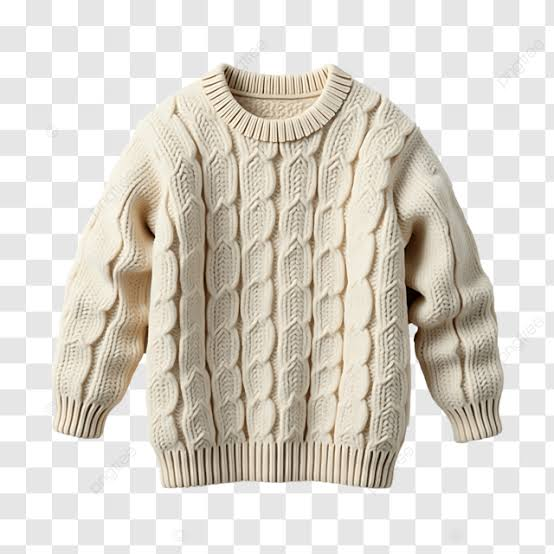

Tejidos
Nuestras confecciones en hilo y lana, diseñadas para dar calidez a tus días.
Cerámicos
Piezas únicas moldeadas y pintadas a mano para decorar tu hogar.
Pinturas
Obras de arte originales que capturan emociones, paisajes e historias.